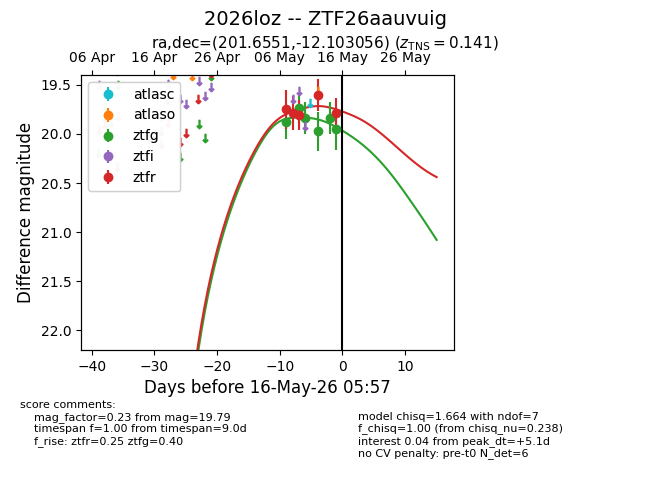
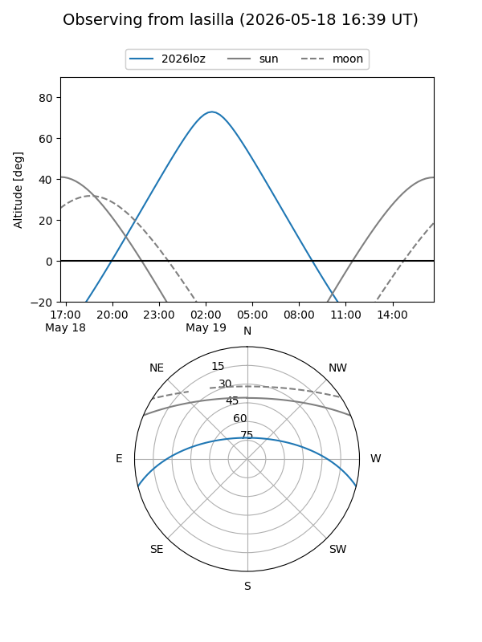
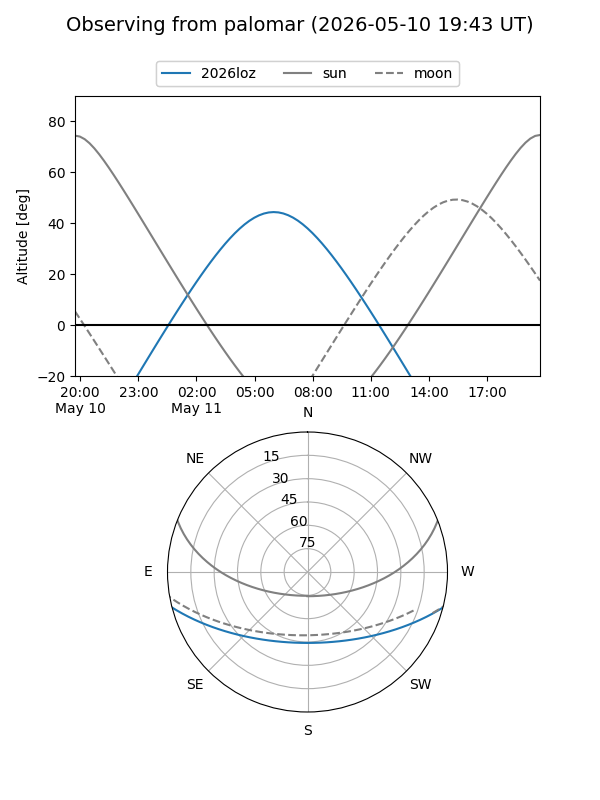
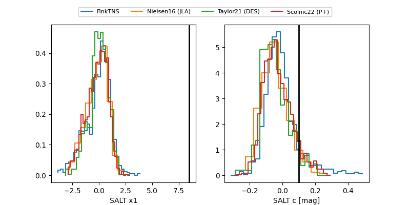

2026loz
Target 2026loz at 2026-05-16 05:59
Aliases and brokers:
FINK: link
Lasair: link
ALeRCE: link
TNS: link
YSE: link
alt names
ZTF26aauvuig (ztf,fink_ztf)
2026loz (tns,yse)
Coordinates:
equatorial (ra, dec) = 201.6551,-12.10306
equatorial (HMS+DMS) = 13:26:37.23,-12:06:11.00
galactic (l, b) = (316.3397,+49.85056)
Flags:
confirmed ia
Photometry:
last ztfg=19.95, ztfr=19.79
6 ztfg, 5 ztfr detections
Lightcurve

Visibility


Additional plots
